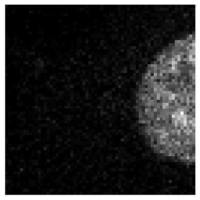
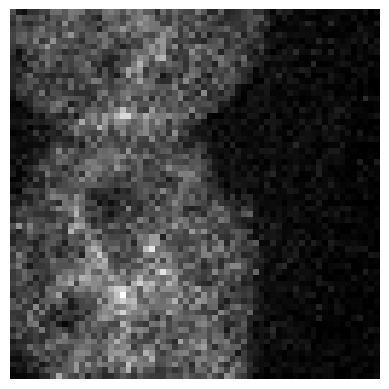

a = BioImage.create('./data_examples/example_tiff.tiff')
print(a.shape)torch.Size([1, 96, 512, 512])The module introduces specialized classes to represent various bioimaging data structures, facilitating seamless integration with machine learning workflows.
MetaResolver (*args, **kwargs)
The MetaResolver class addresses metaclass conflicts, ensuring compatibility across different data structures. This is particularly useful when integrating with libraries that have specific metaclass requirements.
BioImageBase (*args, **kwargs)
Serving as the foundational class for bioimaging data, BioImageBase provides core functionalities for image handling. It ensures that instances of specified types are appropriately cast to this class, maintaining consistency in data representation.
Metaclass casts x to this class if it is of type cls._bypass_type.
BioImage (*args, **kwargs)
A subclass of BioImageBase, the BioImage class is tailored for handling both 2D and 3D image objects. It offers methods to load images from various formats and provides access to image properties such as shape and dimensions.
a = BioImage.create('./data_examples/example_tiff.tiff')
print(a.shape)torch.Size([1, 96, 512, 512])BioImageStack (*args, **kwargs)
Designed for 3D image data, BioImageStack extends BioImageBase to manage volumetric images effectively. It includes functionalities for slicing, visualization, and manipulation of 3D data.
a = BioImageStack.create('./data_examples/example_tiff.tiff')
print(a.shape)torch.Size([1, 96, 512, 512])BioImageProject (*args, **kwargs)
The BioImageProject class represents a 3D image stack as a 2D image using maximum intensity projection. This is particularly useful for visualizing volumetric data in a 2D format, aiding in quick assessments and presentations.
a = BioImageProject.create('./data_examples/example_tiff.tiff')
a.shapetorch.Size([1, 512, 512])BioImageMulti (*args, **kwargs)
For multi-channel 2D images, BioImageMulti extends BioImageBase to handle data with multiple channels, such as different fluorescence markers in microscopy images.
# Load a 3D image stack as a multichannel image
a = BioImageMulti.create('./data_examples/example_tiff.tiff')
# Differently from BioImageStack, here the third dimension is encoded as channels.
print(a.shape)torch.Size([96, 512, 512])To facilitate seamless integration between tensors and bioimaging data structures, the module provides conversion utilities.
Tensor2BioImage (cls:__main__.BioImageBase=<class '__main__.BioImageStack'>)
The Tensor2BioImage transform converts tensors into BioImageBase instances, enabling the application of bioimaging-specific methods to tensor data. This is essential for integrating deep learning models with bioimaging workflows.
The module offers classes to construct data blocks and data loaders, streamlining the preparation of datasets for machine learning models.
BioImageBlock (cls:__main__.BioImageBase=<class '__main__.BioImage'>)
A TransformBlock tailored for bioimaging data, BioImageBlock facilitates the creation of data processing pipelines, including transformations and augmentations specific to bioimaging.
BioDataBlock (blocks:list=(<fastai.data.block.TransformBlock object at 0x7fdfd48070d0>, <fastai.data.block.TransformBlock object at 0x7fdfd4807410>), dl_type:fastai.data.core.TfmdDL=None, get_items=<function get_image_files>, get_y=None, get_x=None, getters:list=None, n_inp:int=None, item_tfms:list=None, batch_tfms:list=None, **kwargs)
The BioDataBlock class serves as a generic container to build Datasets and DataLoaders efficiently. It integrates item and batch transformations, getters, and splitters, simplifying the setup of data pipelines for training and validation.
| Type | Default | Details | |
|---|---|---|---|
| blocks | list | (<fastai.data.block.TransformBlock object at 0x7fdfd48070d0>, <fastai.data.block.TransformBlock object at 0x7fdfd4807410>) | One or more TransformBlocks |
| dl_type | TfmdDL | None | Task specific TfmdDL, defaults to block’s dl_type orTfmdDL |
| get_items | function | get_image_files | |
| get_y | NoneType | None | |
| get_x | NoneType | None | |
| getters | list | None | Getter functions applied to results of get_items |
| n_inp | int | None | Number of inputs |
| item_tfms | list | None | ItemTransforms, applied on an item |
| batch_tfms | list | None | Transforms or RandTransforms, applied by batch |
| kwargs |
BioDataLoaders (*loaders, path:str|pathlib.Path='.', device=None)
Basic wrapper around several DataLoaders with factory methods for biomedical imaging problems. Managing multiple DataLoader instances, BioDataLoaders handles data loading for different phases of model training, such as training, validation, and testing. It ensures efficient data handling and supports various batch processing strategies.
BioDataLoaders.from_source (data_source, show_summary:bool=False, path:str|Path='.', bs:int=64, val_bs:int=None, shuffle:bool=True, device=None)
Create and return a DataLoader from a BioDataBlock using provided keyword arguments.
Returns a DataLoader: A PyTorch DataLoader object populated with the data from the BioDataBlock. If show_summary is True, it also prints a summary of the datablock after creation.
| Type | Default | Details | |
|---|---|---|---|
| data_source | The source of the data to be loaded by the dataloader. This can be any type that is compatible with the dataloading method specified in kwargs (e.g., paths, datasets). | ||
| show_summary | bool | False | If True, print a summary of the BioDataBlock after creation. |
| path | str | pathlib.Path | . | Path to put in DataLoaders |
| bs | int | 64 | Size of batch |
| val_bs | int | None | Size of batch for validation DataLoader |
| shuffle | bool | True | Whether to shuffle data |
| device | NoneType | None | Device to put DataLoaders |
BioDataLoaders.from_folder (path, get_target_fn, train='train', valid='valid', valid_pct=None, seed=None, item_tfms=None, batch_tfms=None, img_cls=<class '__main__.BioImage'>, target_img_cls=<class '__main__.BioImage'>, show_summary:bool=False, bs:int=64, val_bs:int=None, shuffle:bool=True, device=None)
Create from dataset in path with train and valid subfolders (or provide valid_pct)
| Type | Default | Details | |
|---|---|---|---|
| path | str | pathlib.Path | . | Path to put in DataLoaders |
| get_target_fn | |||
| train | str | train | |
| valid | str | valid | |
| valid_pct | NoneType | None | |
| seed | NoneType | None | |
| item_tfms | NoneType | None | |
| batch_tfms | NoneType | None | |
| img_cls | MetaResolver | BioImage | |
| target_img_cls | MetaResolver | BioImage | |
| show_summary | bool | False | If True, print a summary of the BioDataBlock after creation. |
| bs | int | 64 | Size of batch |
| val_bs | int | None | Size of batch for validation DataLoader |
| shuffle | bool | True | Whether to shuffle data |
| device | NoneType | None | Device to put DataLoaders |
BioDataLoaders.from_df (df, path='.', valid_pct=0.2, seed=None, fn_col=0, folder=None, pref=None, suff='', target_col=1, target_folder=None, target_suff='', valid_col=None, item_tfms=None, batch_tfms=None, img_cls=<class '__main__.BioImage'>, target_img_cls=<class '__main__.BioImage'>, show_summary:bool=False, bs:int=64, val_bs:int=None, shuffle:bool=True, device=None)
Create from df using fn_col and target_col
| Type | Default | Details | |
|---|---|---|---|
| df | |||
| path | str | pathlib.Path | . | Path to put in DataLoaders |
| valid_pct | float | 0.2 | |
| seed | NoneType | None | |
| fn_col | int | 0 | |
| folder | NoneType | None | |
| pref | NoneType | None | |
| suff | str | ||
| target_col | int | 1 | |
| target_folder | NoneType | None | |
| target_suff | str | ||
| valid_col | NoneType | None | |
| item_tfms | NoneType | None | |
| batch_tfms | NoneType | None | |
| img_cls | MetaResolver | BioImage | |
| target_img_cls | MetaResolver | BioImage | |
| show_summary | bool | False | If True, print a summary of the BioDataBlock after creation. |
| bs | int | 64 | Size of batch |
| val_bs | int | None | Size of batch for validation DataLoader |
| shuffle | bool | True | Whether to shuffle data |
| device | NoneType | None | Device to put DataLoaders |
BioDataLoaders.from_csv (path, csv_fname='train.csv', header='path', delimiter=None, quoting=0, valid_pct=0.2, seed=None, fn_col=0, folder=None, pref=None, suff='', target_col=1, target_folder=None, target_suff='', valid_col=None, item_tfms=None, batch_tfms=None, img_cls=<class '__main__.BioImage'>, target_img_cls=<class '__main__.BioImage'>, show_summary:bool=False, bs:int=64, val_bs:int=None, shuffle:bool=True, device=None)
Create from path/csv_fname using fn_col and target_col
| Type | Default | Details | |
|---|---|---|---|
| path | str | pathlib.Path | . | Path to put in DataLoaders |
| csv_fname | str | train.csv | |
| header | str | path | |
| delimiter | NoneType | None | |
| quoting | int | 0 | |
| valid_pct | float | 0.2 | |
| seed | NoneType | None | |
| fn_col | int | 0 | |
| folder | NoneType | None | |
| pref | NoneType | None | |
| suff | str | ||
| target_col | int | 1 | |
| target_folder | NoneType | None | |
| target_suff | str | ||
| valid_col | NoneType | None | |
| item_tfms | NoneType | None | |
| batch_tfms | NoneType | None | |
| img_cls | MetaResolver | BioImage | |
| target_img_cls | MetaResolver | BioImage | |
| show_summary | bool | False | If True, print a summary of the BioDataBlock after creation. |
| bs | int | 64 | Size of batch |
| val_bs | int | None | Size of batch for validation DataLoader |
| shuffle | bool | True | Whether to shuffle data |
| device | NoneType | None | Device to put DataLoaders |
BioDataLoaders.class_from_folder (path, train='train', valid='valid', valid_pct=None, seed=None, vocab=None, item_tfms=None, batch_tfms=None, img_cls=<class '__main__.BioImage'>, show_summary:bool=False, bs:int=64, val_bs:int=None, shuffle:bool=True, device=None)
Create from dataset in path with train and valid subfolders (or provide valid_pct)
| Type | Default | Details | |
|---|---|---|---|
| path | str | pathlib.Path | . | Path to put in DataLoaders |
| train | str | train | |
| valid | str | valid | |
| valid_pct | NoneType | None | |
| seed | NoneType | None | |
| vocab | NoneType | None | |
| item_tfms | NoneType | None | |
| batch_tfms | NoneType | None | |
| img_cls | MetaResolver | BioImage | |
| show_summary | bool | False | If True, print a summary of the BioDataBlock after creation. |
| bs | int | 64 | Size of batch |
| val_bs | int | None | Size of batch for validation DataLoader |
| shuffle | bool | True | Whether to shuffle data |
| device | NoneType | None | Device to put DataLoaders |
BioDataLoaders.class_from_df (df, path='.', valid_pct=0.2, seed=None, fn_col=0, folder=None, suff='', label_col=1, label_delim=None, y_block=None, valid_col=None, item_tfms=None, batch_tfms=None, img_cls=<class '__main__.BioImage'>, show_summary:bool=False, bs:int=64, val_bs:int=None, shuffle:bool=True, device=None)
Create from df using fn_col and label_col
| Type | Default | Details | |
|---|---|---|---|
| df | |||
| path | str | pathlib.Path | . | Path to put in DataLoaders |
| valid_pct | float | 0.2 | |
| seed | NoneType | None | |
| fn_col | int | 0 | |
| folder | NoneType | None | |
| suff | str | ||
| label_col | int | 1 | |
| label_delim | NoneType | None | |
| y_block | NoneType | None | |
| valid_col | NoneType | None | |
| item_tfms | NoneType | None | |
| batch_tfms | NoneType | None | |
| img_cls | MetaResolver | BioImage | |
| show_summary | bool | False | If True, print a summary of the BioDataBlock after creation. |
| bs | int | 64 | Size of batch |
| val_bs | int | None | Size of batch for validation DataLoader |
| shuffle | bool | True | Whether to shuffle data |
| device | NoneType | None | Device to put DataLoaders |
BioDataLoaders.class_from_csv (path, csv_fname='labels.csv', header='infer', delimiter=None, quoting=0, valid_pct=0.2, seed=None, fn_col=0, folder=None, suff='', label_col=1, label_delim=None, y_block=None, valid_col=None, item_tfms=None, batch_tfms=None, img_cls=<class '__main__.BioImage'>, show_summary:bool=False, bs:int=64, val_bs:int=None, shuffle:bool=True, device=None)
Create from path/csv_fname using fn_col and label_col
| Type | Default | Details | |
|---|---|---|---|
| path | str | pathlib.Path | . | Path to put in DataLoaders |
| csv_fname | str | labels.csv | |
| header | str | infer | |
| delimiter | NoneType | None | |
| quoting | int | 0 | |
| valid_pct | float | 0.2 | |
| seed | NoneType | None | |
| fn_col | int | 0 | |
| folder | NoneType | None | |
| suff | str | ||
| label_col | int | 1 | |
| label_delim | NoneType | None | |
| y_block | NoneType | None | |
| valid_col | NoneType | None | |
| item_tfms | NoneType | None | |
| batch_tfms | NoneType | None | |
| img_cls | MetaResolver | BioImage | |
| show_summary | bool | False | If True, print a summary of the BioDataBlock after creation. |
| bs | int | 64 | Size of batch |
| val_bs | int | None | Size of batch for validation DataLoader |
| shuffle | bool | True | Whether to shuffle data |
| device | NoneType | None | Device to put DataLoaders |
BioDataLoaders.class_from_lists (path, fnames, labels, valid_pct=0.2, seed:int=None, y_block=None, item_tfms=None, batch_tfms=None, img_cls=<class '__main__.BioImage'>, show_summary:bool=False, bs:int=64, val_bs:int=None, shuffle:bool=True, device=None)
Create from list of fnames and labels in path
| Type | Default | Details | |
|---|---|---|---|
| path | str | pathlib.Path | . | Path to put in DataLoaders |
| fnames | |||
| labels | |||
| valid_pct | float | 0.2 | |
| seed | int | None | |
| y_block | NoneType | None | |
| item_tfms | NoneType | None | |
| batch_tfms | NoneType | None | |
| img_cls | MetaResolver | BioImage | |
| show_summary | bool | False | If True, print a summary of the BioDataBlock after creation. |
| bs | int | 64 | Size of batch |
| val_bs | int | None | Size of batch for validation DataLoader |
| shuffle | bool | True | Whether to shuffle data |
| device | NoneType | None | Device to put DataLoaders |
# image_path = '../_data'
# batch_size = 32
# path = Path(image_path)/'bloodmnist'
# path_train = path/'train'
# path_val = path/'val'
# # Path to the YAML configuration file
# yaml_path = './data_examples/sample_config.yml'
# # Create BioDataLoaders instance from YAML with optional overrides
# dataloaders = BioDataLoaders.from_yaml(
# path,
# yaml_path,
# show_summary = False
# )
# model = SEResNet50(spatial_dims=2,
# in_channels=3,
# num_classes=8)
# # Define the trainer and load the data from the yaml file
# trainer = fastTrainer.from_yaml(dataloaders, model, yaml_path)
# # Train the model
# trainer.fit(1)Functions to retrieve specific data components are provided, aiding in the organization and preprocessing of datasets.
get_gt (path_gt, gt_file_name='avg50.png')
The get_gt function retrieves ground truth data, essential for supervised learning tasks. It ensures that the correct labels or annotations are associated with each data sample.
This function constructs a path to a ground truth file based on the given path_gt and gt_file_name.
It uses a lambda function to create a new path by appending gt_file_name to the parent directory of the input file, as specified by path_gt.
Returns a callable: A function that takes a single argument (a filename) and returns a Path object representing the full path to the ground truth file. When called with a filename, this function constructs the path by combining path_gt or the parent directory of the filename with gt_file_name.
| Type | Default | Details | |
|---|---|---|---|
| path_gt | The base directory where the ground truth files are stored, or a file path from which to derive the parent directory. | ||
| gt_file_name | str | avg50.png | The name of the ground truth file. |
Similar to get_gt, the get_target function fetches target data for training, validation, or testing, facilitating the preparation of datasets for machine learning models.
get_target (path:str, same_filename=True, target_file_prefix='target', signal_file_prefix='signal', relative_path=False)
Constructs and returns functions for generating file paths to “target” files based on given input parameters.
This function defines two nested helper functions within its scope:
- `construct_target_filename(file_name)`: Constructs a target file name by inserting the specified prefix into the original file name.
- `generate_target_path(file_name)`: Generates a path to the target file based on whether `same_filename` is set to True or False.The main function returns the appropriate helper function based on the value of same_filename.
Returns a callable: A function that takes a file name as input and returns its corresponding target file path based on the specified parameters.
| Type | Default | Details | |
|---|---|---|---|
| path | str | The base directory where the files are located. This should be a string representing an absolute or relative path. | |
| same_filename | bool | True | If True, the target file name will match the original file name; otherwise, it will use the specified prefix. |
| target_file_prefix | str | target | The prefix to insert into the target file name if same_filename is False. |
| signal_file_prefix | str | signal | The prefix used in the original file names that should be replaced by the target prefix. |
| relative_path | bool | False | If True, it indicates that the path is relative to the parent folder in the path where the input files are located. |
print(get_target('train_folder/target', same_filename=False)('../signal/signal01.tif'))
print(get_target('target', relative_path=True)('../train_folder/signal/image01.tif'))train_folder/target/target01.tif
../train_folder/target/image01.tifprint(get_target('GT', relative_path=True, same_filename=False, target_file_prefix="image_clean", signal_file_prefix="image_noisy")('train_folder/signal/image_noisy.tif'))train_folder/GT/image_clean.tifFor tasks involving denoising or noise analysis, get_noisy_pair retrieves pairs of clean and noisy data, enabling the training of models to learn noise reduction.
get_noisy_pair (fn)
Get another “noisy” version of the input file by selecting a file from the same directory.
This function first retrieves all image files in the directory of the input file fn (excluding subdirectories). It then selects one of these files at random, ensuring that it is not the original file itself to avoid creating a trivial “noisy” pair.
Parameters:
fn (Path or str): The path to the original image file. This should be a Path object but accepts string inputs for convenience.Returns:
Path: A Path object pointing to the selected noisy file.Visualization functions are included to display batches of data and model results, aiding in qualitative assessments and debugging.
show_batch (x:BioImageBase, y:BioImageBase, samples, ctxs=None, max_n:int=10, nrows:int=None, ncols:int=None, figsize:tuple=None, **kwargs)
The show_batch function visualizes a batch of data samples, allowing users to inspect the input data and verify preprocessing steps.
Returns: List[Context]: A list of contexts after displaying the images and labels.
| Type | Default | Details | |
|---|---|---|---|
| x | BioImageBase | The input image data. | |
| y | BioImageBase | The target label data. | |
| samples | List of sample indices to display. | ||
| ctxs | NoneType | List of contexts for displaying images. If None, create new ones using get_grid(). |
|
| max_n | int | 10 | Maximum number of samples to display. |
| nrows | int | None | Number of rows in the grid if ctxs are not provided. |
| ncols | int | None | Number of columns in the grid if ctxs are not provided. |
| figsize | tuple | None | Figure size for the image display. |
| kwargs | Additional keyword arguments. |
show_results (x: BioImageBase, y: BioImageBase, samples, outs, ctxs=None, max_n=10, figsize=None, **kwargs)
After model inference, show_results displays the model’s predictions alongside the ground truth, facilitating the evaluation of model performance.
Returns:
List[Context]: A list of contexts after displaying the images and labels.
| Type | Default | Details | |
|---|---|---|---|
| x | BioImageBase | The input image data. | |
| y | BioImageBase | The target label data. | |
| samples | List of sample indices to display. | ||
| outs | List of output predictions corresponding to the samples. | ||
| ctxs | NoneType | List of contexts for displaying images. If None, create new ones using get_grid(). |
|
| max_n | int | 10 | |
| figsize | tuple | None | Figure size for the image display. |
| kwargs | Additional keyword arguments. |
The module provides functions for data preprocessing, including patch extraction and dimensionality reduction, essential for preparing data for machine learning models.
extract_patches (data, patch_size, overlap)
Extracts n-dimensional patches from the input data.
Returns: - A list of patches as numpy arrays.
| Details | |
|---|---|
| data | numpy array of the input data (n-dimensional). |
| patch_size | tuple of integers defining the size of the patches in each dimension. |
| overlap | float (between 0 and 1) indicating overlap between patches. |
The extract_patches function divides images into smaller patches, which is useful for training models on localized regions of interest, especially when dealing with high-resolution images.
data = np.random.rand(100, 100, 3) # Example 3D data
patch_size = (64,64,2)
overlap = 0.5
patches = extract_patches(data, patch_size, overlap)
print("Number of generated patches:", len(patches))
patches[0].shapeNumber of generated patches: 8(64, 64, 2)save_patches_grid (data_folder, gt_folder, output_folder, patch_size, overlap, threshold=None, squeeze_input=True, squeeze_patches=False, csv_output=True, train_test_split_ratio=0.8, tfms_before:List=None, tfms_after:List=None)
Loads n-dimensional data from data_folder and gt_folder, generates patches, and saves them into individual HDF5 files. Each HDF5 file will have datasets with the structure X/patch_idx and y/patch_idx.
| Type | Default | Details | |
|---|---|---|---|
| data_folder | Path to the folder containing data files (n-dimensional data). | ||
| gt_folder | Path to the folder containing ground truth (gt) files (n-dimensional data). | ||
| output_folder | Path to the folder where the HDF5 files will be saved. | ||
| patch_size | tuple of integers defining the size of the patches. | ||
| overlap | float (between 0 and 1) defining the overlap between patches. | ||
| threshold | NoneType | None | If provided, patches with a mean value below this threshold will be discarded. |
| squeeze_input | bool | True | If True, squeeze the input data to remove single-dimensional entries. |
| squeeze_patches | bool | False | If True, squeeze the patches to remove single-dimensional entries. |
| csv_output | bool | True | If True, a CSV file listing all patch paths is created. |
| train_test_split_ratio | float | 0.8 | Ratio of data to split into train and test CSV files (e.g., 0.8 for 80% train). |
| tfms_before | List | None | List of transforms to apply before extracting patches. |
| tfms_after | List | None | List of transforms to apply after extracting patches. |
After extracting patches, save_patches_grid saves them in a grid format, facilitating visualization and inspection of the patches.
from bioMONAI.transforms import Blurdata_folder = './data_examples/Confocal_BPAE_B'
# For the sake of simplicity, in this example we use the same folder for ground truth
gt_folder = './data_examples/Confocal_BPAE_B'
output_folder = './_test'
patch_size = (64,64)
overlap = 0
save_patches_grid(data_folder, gt_folder, output_folder, patch_size, overlap, squeeze_input=True, tfms_after=[Blur(ksize=15)])Processing files: 100%|██████████| 2/2 [00:00<00:00, 26.92it/s]CSV files saved to: ./_test/train_patches.csv and ./_test/test_patches.csvfrom bioMONAI.io import hdf5_reader, split_hdf_path
from bioMONAI.visualize import plot_imagefile_path = './_test/HV110_P0500510000.h5/X/1'
im , _ = hdf5_reader()(file_path)
plot_image(im)
file_path = './_test/HV110_P0500510000.h5/y/1'
im , _ = hdf5_reader()(file_path)
plot_image(im)
extract_random_patches (data_tuple, patch_size, num_patches)
Extracts a specified number of random n-dimensional patches from the input data and ground truth data.
Returns: - A tuple of lists containing randomly cropped patches as numpy arrays (input_patches, gt_patches).
| Details | |
|---|---|
| data_tuple | tuple of numpy arrays (input data, ground truth data). |
| patch_size | tuple of integers defining the size of the patches in each dimension. |
| num_patches | number of random patches to extract. |
save_patches_random (data_folder, gt_folder, output_folder, patch_size, num_patches, threshold=None, squeeze_input=True, squeeze_patches=False, csv_output=True, train_test_split_ratio=0.8, tfms_before:List=None, tfms_after:List=None)
Loads n-dimensional data from data_folder and gt_folder, generates random patches, and saves them into individual HDF5 files. Each HDF5 file will have datasets with the structure X/patch_idx and y/patch_idx.
| Type | Default | Details | |
|---|---|---|---|
| data_folder | Path to the folder containing data files (n-dimensional data). | ||
| gt_folder | Path to the folder containing ground truth (gt) files (n-dimensional data). | ||
| output_folder | Path to the folder where the HDF5 files will be saved. | ||
| patch_size | tuple of integers defining the size of the patches. | ||
| num_patches | number of random patches to extract per file. | ||
| threshold | NoneType | None | If provided, patches with a mean value below this threshold will be discarded. |
| squeeze_input | bool | True | If True, squeezes singleton dimensions in the input data. |
| squeeze_patches | bool | False | If True, squeezes singleton dimensions in the patches. |
| csv_output | bool | True | If True, a CSV file listing all patch paths is created. |
| train_test_split_ratio | float | 0.8 | Ratio of data to split into train and test CSV files (e.g., 0.8 for 80% train). |
| tfms_before | List | None | List of transforms to apply before extracting patches. |
| tfms_after | List | None | List of transforms to apply after extracting patches. |
data_folder = './data_examples/Confocal_BPAE_B'
gt_folder = './data_examples/Confocal_BPAE_B'
output_folder = './_test2'
patch_size = (64,64)
num_patches= 2
save_patches_random(data_folder, gt_folder, output_folder, patch_size, num_patches, squeeze_input=True, tfms_after=[Blur(ksize=15)])Processing files: 100%|██████████| 2/2 [00:00<00:00, 54.34it/s]CSV files saved to: ./_test2/train_patches.csv and ./_test2/test_patches.csvfile_path = './_test2/HV110_P0500510000_random_patches.h5/X/1'
im , _ = hdf5_reader()(file_path)
plot_image(im)
file_path = './_test2/HV110_P0500510000_random_patches.h5/y/1'
im , _ = hdf5_reader()(file_path)
plot_image(im)
dict2string (d, item_sep='_', key_value_sep='', pad_zeroes=None)
Transforms a dictionary into a string with customizable separators and optional zero padding for integers.
Returns the formatted dictionary as a string.
| Type | Default | Details | |
|---|---|---|---|
| d | The dictionary to convert. | ||
| item_sep | str | _ | The separator between dictionary items (default is “,”). |
| key_value_sep | str | The separator between keys and values (default is “:”). | |
| pad_zeroes | NoneType | None | The minimum width for integer values, padded with zeros. If None, no padding is applied. |
my_dict = {'C': 2, 'Z': 30, 'S': 1}
result = dict2string(my_dict, pad_zeroes=3)
print(result)C002_Z030_S001remove_singleton_dims (substack, order)
Remove dimensions with a size of 1 from both the substack and the order string.
Returns:
substack (np.array): The substack with singleton dimensions removed.
new_order (str): The updated dimension order string.| Details | |
|---|---|
| substack | The extracted substack data. |
| order | The dimension order string (e.g., ‘CZYX’). |
extract_substacks (input_file, output_dir=None, indices=None, split_dimension=None, squeeze_dims=True, *kwargs)
Extract substacks from a multidimensional OME-TIFF stack using AICSImageIO.
| Type | Default | Details | |
|---|---|---|---|
| input_file | Path to the input OME-TIFF file. | ||
| output_dir | NoneType | None | Directory to save the extracted substacks. If a list, the substacks will be saved in the corresponding subdirectories from the list. |
| indices | NoneType | None | A dictionary specifying which indices to extract. Keys can include ‘C’ for channel, ‘Z’ for z-slice, ‘T’ for time point, and ‘S’ for scene. If None, all indices are extracted. |
| split_dimension | NoneType | None | Dimension to split substacks along. If provided, separate substacks will be generated for each index in the split_dimension. Must be one of the keys in indices. |
| squeeze_dims | bool | True | Dimension to squeeze substacks along. |
| kwargs |
output_dir = "./_test_folder/"
subdirs = [output_dir + folder for folder in ["channel_0", "channel_1", "channel_2"]]
subdirs['./_test_folder/channel_0',
'./_test_folder/channel_1',
'./_test_folder/channel_2'][os.path.join([output_dir][0], f"{subdirs[0]}_{ii}") for ii in range(2)]['./_test_folder/./_test_folder/channel_0_0',
'./_test_folder/./_test_folder/channel_0_1']filename = './data_examples/2155a4fe_3500000635_100X_20170227_E08_P21.ome.tiff'
# This extracts a single substack for channel 0, z-slice 5, and time point 0.
extract_substacks(filename, output_dir=output_dir, indices={"C": 0, "Z": range(35), "T": 0})Extracted substack saved to: ./_test_folder/2155a4fe_3500000635_100X_20170227_E08_P21_substack_C0_Zrange(0, 35)_T0.ome.tiff# This extracts substacks for each channel (`C`) and saves them in separate subfolders named "C_0", "C_1", "C_2", etc.
extract_substacks(filename, output_dir=[output_dir], indices={"C": [0, 1, 2], "Z": 5, "T": 0}, split_dimension="C")Extracted substack saved to: ./_test_folder/C_0/2155a4fe_3500000635_100X_20170227_E08_P21_substack_C0_Z5_T0.ome.tiff
Extracted substack saved to: ./_test_folder/C_1/2155a4fe_3500000635_100X_20170227_E08_P21_substack_C1_Z5_T0.ome.tiff
Extracted substack saved to: ./_test_folder/C_2/2155a4fe_3500000635_100X_20170227_E08_P21_substack_C2_Z5_T0.ome.tiff# This extracts substacks for each channel and saves them in directories "channel_0", "channel_1", and "channel_2".
extract_substacks(filename, output_dir=subdirs, indices={"C": [0, 1, 2], "Z": 5}, split_dimension="C")Extracted substack saved to: ./_test_folder/channel_0/2155a4fe_3500000635_100X_20170227_E08_P21_substack_C0_Z5.ome.tiff
Extracted substack saved to: ./_test_folder/channel_1/2155a4fe_3500000635_100X_20170227_E08_P21_substack_C1_Z5.ome.tiff
Extracted substack saved to: ./_test_folder/channel_2/2155a4fe_3500000635_100X_20170227_E08_P21_substack_C2_Z5.ome.tiff